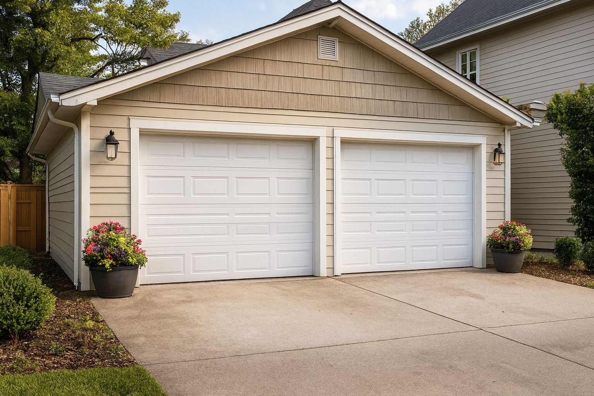

Choosing between a shed and a garage comes down to how you plan to
use the space, what your property allows, and how much you want to
invest. Both options add value, but they serve different
purposes—and the right choice can save you money while giving you
exactly the functionality you need.
When a Shed Makes More Sense
A shed is ideal for homeowners who need quick, affordable storage
or a small workspace. Sheds typically cost far less than garages
and can be built in 2–3 days, making them one of
the fastest upgrades you can add to your property. In many
Maryland counties, sheds under 200 sq. ft. don't
require a building permit—though zoning rules still apply—so the
process is simpler and faster.
Financing is also easier on the wallet. A $5,000–$8,000 shed
financed over 10 years at 10% APR often comes out
to $65–$105 per month, making it a low‑commitment
improvement with high utility.

When a Garage Is the Better Investment
Garages offer full protection from weather, more enclosed space,
and the ability to store vehicles, equipment, or create a workshop
with power and insulation. They also add more resale value because
they're considered permanent structures. However, they require
permits, inspections, and a larger budget—often
$25,000–$45,000+ depending on size and finishes.
Financed over 10 years, a garage may range from
$330–$600 per month, but the long‑term value and
functionality can justify the investment.
The Bottom Line
Choose a shed if you want fast, affordable
storage or a small workspace with minimal red tape. Choose a
garage if you need maximum protection,
long‑term value, and a fully enclosed structure.
If you want, I can help you compare both options based on your
property size, zoning, and budget.